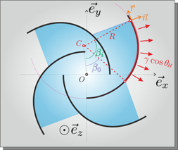
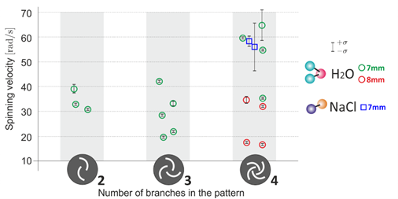
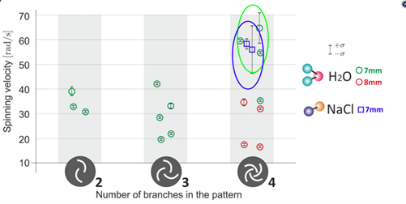

IPT 2023 Problème #9: Spinning Droplets.
Énoncé du sujet :
On peut faire tourner de petites gouttelettes d'eau sur une surface hydrophobe en réalisant différents motifs hydrophiles.
Quelles propriétés du liquide (pas nécessairement de l'eau) peut-on extraire de ce type d'expérience ?
Optimisez le montage pour maximiser la vitesse de rotation des gouttelettes.
Introduction :
Avez-vous eu déjà eu l'occasion de voir de la pluie tomber sur des feuilles de lotus ? On observe que les gouttes qui tombent rebondissent après impact sur la feuille et gardent leur forme circulaire lorsqu'elles sont en contact avec celle-ci après avoir rebondi. Ces feuilles de lotus ont la particularité d'être des surfaces hydrophobes. Maintenant, si vous faites tomber une goutte d'eau sur une surface superhydrophobe (telle que les feuilles de lotus) et que vous tracez dessus des motifs hydrophiles asymétriques, il est possible de faire tourner la goutte en même temps qu'elle rebondit. C'est ce que l'on appelle, des « spinning droplets », ou en français, les « gouttes qui tournent ». Cette capacité des gouttes à tourner peut présenter son intérêt dans plusieurs domaines, tels que la propulsion dans le cadre d'optimisation de la réaction du mélange dans un moteur.
L'objectif de ce projet est le suivant : pouvoir maximiser la vitesse de rotation de la goutte après impact sur une surface superhydrophobe avec des motifs hydrophiles asymétriques et pouvoir déduire des propriétés du liquide à partir des expériences obtenues. Pour cela, nous devrons procéder par étape :
- Comprendre l'origine de la rotation de la goutte
- Créer notre surface superhydrophobe et tracer des motifs hydrophiles
- Réaliser le montage de la chute de la goutte sur la surface afin d'obtenir des vidéos exploitables
- Traiter les données et déterminer la vitesse de rotation de la goutte
- Maximiser la vitesse de rotation et déduire les paramètres qui peuvent être déduits à partir de ces expériences
1. Théorie de la « spinning droplet »
a) Théorie sur les surfaces superhydrophobes et hydrophiles
Avant de comprendre la théorie derrière la rotation de la goutte, nous avons besoin de définir la notion d'hydrophobie et d'hydrophilie. Lorsqu'une goutte est posée sur une surface, elle peut avoir différentes formes. Elle peut soit avoir la forme d'une « flaque », soit la forme d'une « perle », c.-à-d. elle garde une forme quasiment circulaire. La forme de la goutte sur la surface est liée au caractère hydrophobe de la surface.
Physiquement, ce caractère hydrophobe peut être relié à une grandeur appelée la tension de surface. En effet, les liquides ont tendance à être sous une forme qui minimise leur énergie de surface, car il existe une interaction cohésive entre les molécules qui sont dans cette phase condensée, c'est pourquoi les gouttes ont une forme circulaire. Ainsi, la présence d'une interface, par exemple, l'interface liquide vapeur, entraîne une perte de la cohésion partielle des molécules à la surface, car les molécules de liquide n'interagissent pas avec les molécules de vapeur. On a ainsi une perte d'énergie appelée énergie de surface que l'on note Es. Cette énergie augmente avec la surface. On en découle ainsi la relation suivante :
Es=γS
Où
- Es est l'énergie de surface
- γ est la tension de surface
- S est la surface
Dans le cas de l'eau, la tension de surface vaut 72 N/m.
Dans le cadre de la goutte d'eau, nous pouvons simplifier l'expression de Es, qui vérifie alors l'expression suivante :
Es=γR²
Le caractère hydrophobe d'une surface peut se déduire d'une équation, appelée l'équation d'Young et faisant appel aux tensions de surface entre les différentes phases du liquide :
Ainsi, si l'angle statique est :
- < 90° alors la surface est hydrophile
- > 90° alors la surface est hydrophobe
- > 150° alors la surface est superhydrophobe
b) Théorie sur la rotation des gouttes
Nous considérons maintenant que nous avons notre surface superhydrophobe, et nous décidons de tracer nos motifs hydrophiles dessus.
Exemple de surface superhydrophobe (en noir) avec des motifs hydrophiles (en blanc)
La présence de la surface superhydrophobe va entraîner le rebond de la goutte après impact sur la surface, et la présence des motifs hydrophiles va engendrer sa rotation lors de ce rebond. En effet, lors de l'impact de la goutte sur la surface, cette dernière va être soumise à 3 forces, qui vont créer des moments et la faire tourner :
- La première est la force appliquée par la surface superhydrophobe sur la goutte. On se rend compte que cette force pousse la surface de contact de l'eau avec la surface de façon à générer un moment qui va la faire tourner de la droite vers la gauche :
où
- ML est le moment lié à la force appliquée par la surface superhydrophobe sur la goutte
- θL est l'angle statique de la goutte sur la surface superhydrophobe
- Li est la longueur entre le centre du motif et la partie intérieure de la branche du motif en contact avec le fluide
- φ est l'angle entre la longueur Li et la longueur où la force est appliquée
- La deuxième est la force appliquée par les motifs hydrophiles sur la goutte. On se rend compte que cette force pousse la surface de contact de l'eau avec les motifs de façon à générer un moment qui va la faire tourner de la droite vers la gauche :

où
- MH est le moment lié à la force appliquée par la surface hydrophile sur la goutte
- θH est l'angle statique de la goutte sur la surface hydrophile
- βi est l'angle entre la longueur OC et la partie intérieure du motif en contact avec le fluide
- β0 est l'angle entre la longueur OC et la partie extérieure du motif en contact avec le fluide
- La dernière est la force de résistance de la goutte sur les motifs, mais qui est négligeable comparée aux deux autres forces :
où
- MR est le moment lié à la force de résistance de la goutte sur les motifs
- Li est la longueur entre le centre du motif et la partie intérieure de la branche du motif en contact avec le fluide
- α est l'angle entre la longueur Li et le point de contact où le motif est appliqué
La somme de ces deux forces va engendrer alors la rotation de la goutte dont le moment de rotation peut être entièrement caractérisée par la relation suivante :
Avec :
- Δτ la différence en temps entre le moment où l'eau est au dernier point de contact avec la partie intérieure du motif et le moment où l'eau est au dernier point de contact avec la partie extérieure du motif.
- N le nombres de branches du motif
- γ la tension de surface
- D le diamètre maximal atteint par la goutte lorsqu'elle s'étale
- θH l'angle de contact de la partie hydrophile
- θL l'angle de contact de la partie hydrophile
Pour maximiser la vitesse de rotation, il nous faut faire varier les paramètres de cette équation.
2. Fabrication de la surface superhydrophobe
Maintenant que nous comprenons comment nos gouttes peuvent tourner, il nous reste à réaliser le montage expérimental pour répondre au sujet.
Le plus long a été de trouver comment fabriquer une surface la plus hydrophobe possible tout en étant robuste.
Lors de nos premières tentatives, nous recouvrions des lames de microscopes avec de la simple suie de bougie. Cela permettait d'obtenir des surfaces avec un angle de contact intéressant, mais qui n'étaient pas robustes : dès qu'une goutte tombait avec un peu trop de vitesse elle emportait la suie avec elle et rendait impossible toute expérience. Après quelques autres tentatives non concluantes, nous avons fini par pulvériser une fine couche de laque sur la lame avant de la recouvrir de suie pour fixer celle-ci : nous obtenions alors des surfaces moins hydrophobes, mais assez robustes pour pouvoir tracer des motifs hydrophiles et pouvant être réutilisées plusieurs fois.
L'étape suivante a été de créer nos motifs hydrophiles, tout simplement en enlevant la suie avec une pointe fine pour révéler la lame de verre, qui est hydrophile. Pour tracer des motifs réguliers rapidement, nous avons utilisé un « plotter ». Il s'agit d'une machine pouvant suivre un motif dessiné numériquement, avec une lame ou un stylo.
Nous avons utilisé un stylo BIC vide, qui permettait d'obtenir des motifs de la bonne épaisseur. Nous obtenons finalement les lames suivantes :
3. Préparation des films
Nous avons ensuite réalisé un montage pour fixer une caméra ultra rapide (30 kHz) et la seringue pour lâcher les gouttes à la bonne hauteur.
4. Traitement des données
Le montage expérimental est maintenant prêt : il ne nous reste plus qu'à faire varier nos paramètres et mesurer la vitesse de rotation de nos gouttes. Pour cela, nous utilisons une méthode de corrélation d'image souvent utilisée en mécanique des fluides : la PIV, que nous complétons avec un calcul effectué sous Matlab. Cela permet d'obtenir les composantes en x et y de la vitesse ainsi que la valeur de la vitesse de rotation.
Dans ce projet, nous avons fait varier les paramètres suivants :
- Le nombre de spirales N : 2, 3, 4
- Le rayon des motifs R : il n'apparaît explicitement pas dans la formule du moment, mais il peut éventuellement influer sur la valeur de Δτ.
- La tension de surface γ : eau déminéralisée ou eau salée. L'eau salée est censée avoir une tension de surface supérieure à l'eau, mais nos mesures de tension de surface étaient peu précises et nous n'avons pas de valeurs fiables pour le confirmer.
5. Interprétation des résultats
Nous avons réalisé plusieurs dizaines de films, et nous avons sélectionné les plus réussis pour obtenir le graphe suivant :

- Influence du nombre de branches N :
On remarque que la vitesse de rotation augmente quand N augmente : cela est cohérent avec la formule théorique du moment. Nous n'avons pas pu augmenter N davantage à cause du manque de précision du plotter.
- Influence du rayon du motif :
La vitesse de rotation semble diminuer quand le rayon augmente. De même que pour le nombre de branches, le manque de précision du plotter nous a empêchés de diminuer le diamètre en dessous de 7 mm.
- Influence de la tension de surface :

On ne peut pas distinguer les deux types d'expériences de manière significative, on ne peut donc pas conclure sur l'influence de la tension de surfaces.